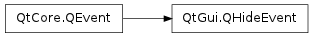

QHideEvent ¶

Detailed Description ¶
The PySide.QtGui.QHideEvent class provides an event which is sent after a widget is hidden.
This event is sent just before QWidget.hide() returns, and also when a top-level window has been hidden (iconified) by the user.
If PySide.QtCore.QEvent.spontaneous() is true, the event originated outside the application. In this case, the user hid the window using the window manager controls, either by iconifying the window or by switching to another virtual desktop where the window isn’t visible. The window will become hidden but not withdrawn. If the window was iconified, QWidget.isMinimized() returns true.
See also
- class PySide.QtGui. QHideEvent ¶
-
Constructs a PySide.QtGui.QHideEvent .